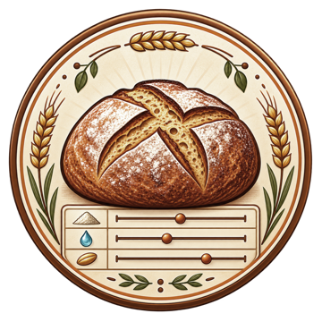

Handbuch · Hilfe · Kontakt
BrotBackstubb
Brot-Rezepte berechnen und den Backtag planen.
Hilfe für BrotBackstubb auf Mac und iPad: Rezepte erstellen, Zutaten berechnen, den Backtag begleiten und Daten sichern.
Mac · iPad

Wobei brauchst du Hilfe?
In fünf Schritten zum geplanten Backtag
- Ein Rezept anlegen
Öffne „Meine Brote“ und wähle „Neues Brotrezept“. Trage Anzahl und gewünschtes Fertiggewicht je Brot ein.
- Mehle und Zutaten wählen
Verteile die Mehlanteile auf insgesamt 100 %. Ergänze weitere Zutaten und prüfe die vorgeschlagene Sauerteigführung.
- Berechnung prüfen und speichern
Prüfe Wassermengen, Salz und Rezeptbeschreibung. Speichere das Rezept; du findest es anschließend unter „Meine Brote“.
- Backtag planen
Wähle „Backtag planen“ auf der Rezeptkarte. Plane so bald wie möglich oder zu einer gewünschten Fertigstellung und prüfe dein Ruhefenster.
- Ablauf starten
Kontrolliere den Zeitplan und die Erinnerungen. Starte den Backtag und schließe die Arbeitsschritte im laufenden Ablauf ab.
Häufige Fragen
Wie berechne ich mehrere Brote gleichzeitig?
Lege im ersten Schritt die Anzahl der Brote und das Fertiggewicht je Brot getrennt fest. Die Zutaten werden auf die gesamte Charge skaliert. Das Backprofil richtet sich weiterhin nach dem Gewicht eines einzelnen Brotes.
Warum verändert sich die Wassermenge bei einer anderen Mehlmischung?
Jede Mehlsorte hat einen eigenen Wasseraufnahmefaktor. Die App berechnet den Bedarf je Mehl und berücksichtigt das Wasser aus Brüh- und Quellstücken. Über „Hydration anpassen · TA-Korrektur“ passt du die Wassermenge an deine Mehlcharge und Erfahrung an.
Welche Sauerteige werden automatisch berechnet?
BrotBackstubb unterstützt die automatische Roggen-, Weizen- und Dinkelsauerteigführung. Andere Mehle können zum Hauptteig gehören, erhalten aber keine daraus abgeleiteten automatischen Sauerteigwerte. Enthält die Mischung Roggen, verwendet die App eine Roggensauerteigführung.
Warum lässt sich meine gewünschte Fertigstellung nicht starten?
Der Plan berücksichtigt die aktuelle Uhrzeit und dein Ruhefenster. Müsste der Backtag bereits begonnen haben, erscheint eine Warnung. Übernimm im Vorschlagsfeld „so bald wie möglich“, um ab dem aktuellen Zeitpunkt neu zu planen.
Warum ist die Gesamt-Restzeit länger als die nächste Arbeitszeit?
Die Gesamt-Restzeit umfasst alle noch ausstehenden Arbeits-, Reife-, Ruhe-, Gar- und Backzeiten bis zum fertigen Brot. Sie ist deshalb länger als die Dauer des nächsten Arbeitsschritts.
Wie sammle ich Zutaten aus mehreren Rezepten?
Wähle bei den Rezeptkarten „Zur Einkaufsliste hinzufügen“. Gleiche Zutaten werden zusammengeführt. Prüfe Vorräte und Einkaufsmengen in der Einkaufsliste und übertrage sie bei Bedarf über „In Erinnerungen speichern“ in die ausgewählte Liste.
Kann ich ein Rezept als PDF oder für Mela exportieren?
Ja. Öffne das Aktionsmenü auf der Rezeptkarte. Dort kannst du die PDF anzeigen oder speichern und eine Mela-Rezeptdatei (.melarecipe) exportieren.
Wie sichere ich meine Rezepte oder stelle ein gelöschtes Rezept wieder her?
„Rezeptversion sichern“ bewahrt einen wiederherstellbaren Stand. Gelöschte Rezepte bleiben 30 Tage im Papierkorb. „Datensicherung exportieren“ sichert Rezepte und Zutatenstamm gemeinsam; eine exportierte Sicherung kannst du später importieren.
Das vollständige Benutzerhandbuch
Das gemeinsame Handbuch für Mac und iPad erklärt Rezeptassistent, Berechnungen, Einkaufsliste und Backtag. Es ist auch offline in der App enthalten: auf dem Mac unter „Hilfe → BrotBackstubb Hilfe“, auf dem iPad im Drei-Punkte-Menü unter „Meine Brote“.
Noch eine Frage?
Schreibe mir, wenn du nicht weiterkommst. Mit diesen Angaben lässt sich dein Anliegen leichter einordnen:
- Mac- oder iPad-Modell, Betriebssystem und App-Version
- Betroffener Bereich: Rezept, Einkaufsliste, Backtag oder Export
- Die gewählten Werte und das erwartete Ergebnis
- Genaue Schritte, Fehlermeldung und bei Bedarf ein Screenshot
Bei Fragen zur Rezeptberechnung helfen Brotanzahl, Fertiggewicht und Mehlanteile; bei Planungsfragen die gewünschte Fertigstellung und das Ruhefenster.
E-Mail schreiben